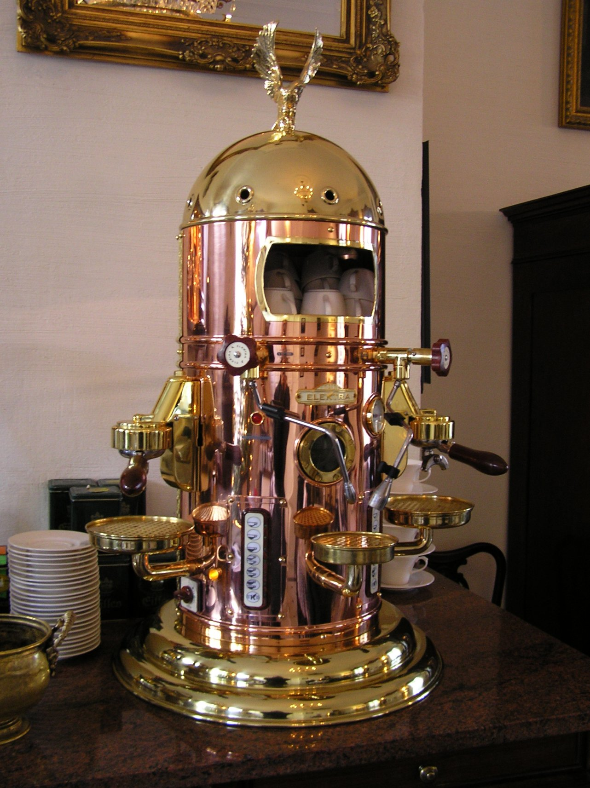
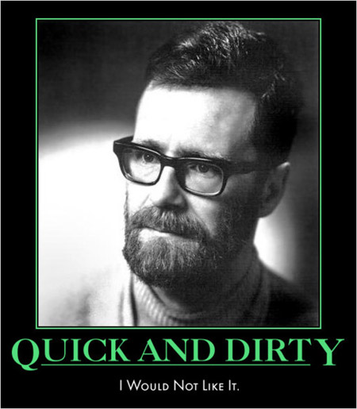
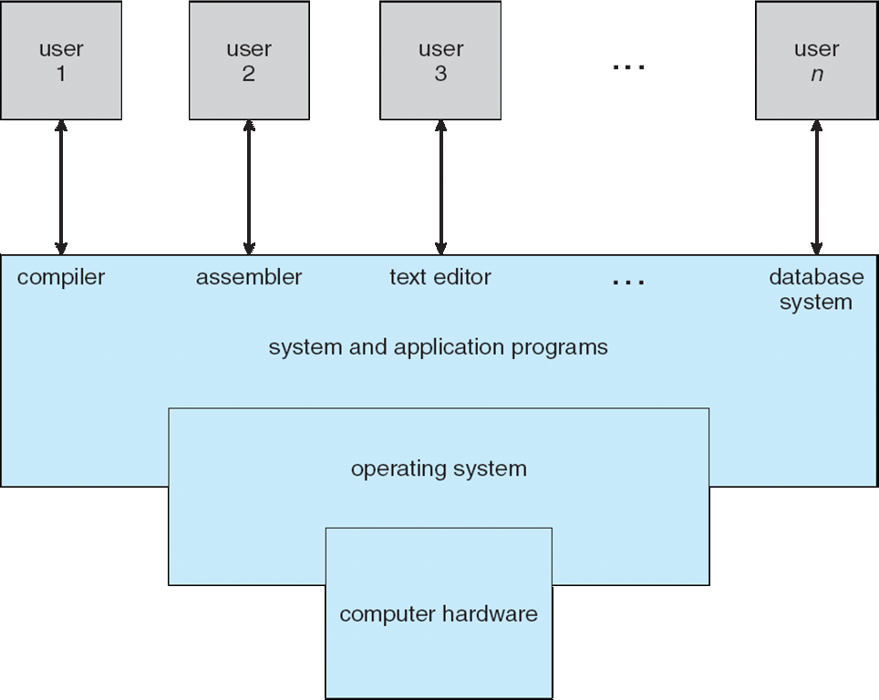
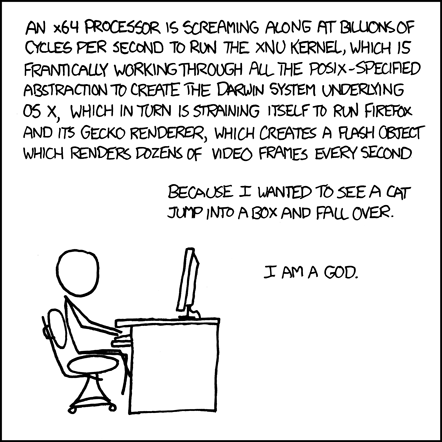
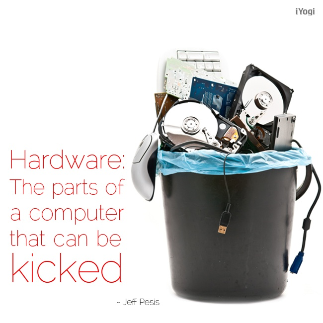

# introduction ## **Operating Systems** ### csci 3411 ### Prof. **Sibin Mohan** --- let's look at **three** questions: --- let's look at **three** questions: 1. _what_ is an operating system? --- let's look at **three** questions: 1. _what_ is an operating system? 2. _why_ should I care? --- let's look at **three** questions: 1. _what_ is an operating system? 2. _why_ should I care? 3. _what_ do I need to know for this course? --- ### _what_ is an operating system? --- ### _what_ is an operating system? let's look at some examples... --- ### _what_ is an operating system? |item| os (y/n)?| |-----|:----:| || --- ### _what_ is an operating system? |item| os (y/n)?| |-----|:----:| |apache | | --- ### _what_ is an operating system? |item| os (y/n)?| |-----|:----:| |apache | **n** | --- ### _what_ is an operating system? |item| os (y/n)?| |-----|:----:| |apache | **n** | |safari/chrome| | --- ### _what_ is an operating system? |item| os (y/n)?| |-----|:----:| |apache | **n** | |safari/chrome| **n** | --- ### _what_ is an operating system? |item| os (y/n)?| |-----|:----:| |apache | **n** | |safari/chrome| **n** | |app store | | --- ### _what_ is an operating system? |item| os (y/n)?| |-----|:----:| |apache | **n** | |safari/chrome| **n** | |app store | **n** | --- ### _what_ is an operating system? |item| os (y/n)?| |-----|:----:| |apache | **n** | |safari/chrome| **n** | |app store | **n** | |emacs | | --- ### _what_ is an operating system? |item| os (y/n)?| |-----|:----:| |apache | **n** | |safari/chrome| **n** | |app store | **n** | |emacs | **n** | --- ### _what_ is an operating system? |item| os (y/n)?| |-----|:----:| |apache | **n** | |safari/chrome| **n** | |app store | **n** | |emacs | **n** | |excel || || --- ### _what_ is an operating system? |item| os (y/n)?| |-----|:----:| |apache | **n** | |safari/chrome| **n** | |app store | **n** | |emacs | **n** | |excel | **n** | || --- ### _what_ is an operating system? |item| os (y/n)?| |-----|:----:| |apache | **n** | |safari/chrome| **n** | |app store | **n** | |**emacs** | ? | |**excel** | ?| || --- <!-- .slide: data-background-color="white" --> --- depending on who you ask... --- depending on who you ask... **emacs** and **excel** may or may not be an OS! Note: - you can create and run pretty much anything on emacs and excel these days! --- let's continue... --- ### _what_ is an operating system? --- ### _what_ is an operating system? let's look at some _more_ examples... --- ### _what_ is an operating system? |item| os (y/n)?| |-----|:----:| | windows | | --- ### _what_ is an operating system? |item| os (y/n)?| |-----|:----:| | windows | **y** | --- ### _what_ is an operating system? |item| os (y/n)?| |-----|:----:| | windows | **y** | | linux | | --- ### _what_ is an operating system? |item| os (y/n)?| |-----|:----:| | windows | **y** | | linux | **y** | --- ### _what_ is an operating system? |item| os (y/n)?| |-----|:----:| | windows | **y** | | linux | **y** | | iOS | | --- ### _what_ is an operating system? |item| os (y/n)?| |-----|:----:| | windows | **y** | | linux | **y** | | iOS | **y** | --- ### _what_ is an operating system? |item| os (y/n)?| |-----|:----:| | windows | **y** | | linux | **y** | | iOS | **y** | | android | | --- ### _what_ is an operating system? |item| os (y/n)?| |-----|:----:| | windows | **y** | | linux | **y** | | iOS | **y** | | android | **y** | --- ### _what_ is an operating system? |item| os (y/n)?| |-----|:----:| | windows | **y** | | linux | **y** | | iOS | **y** | | android | **y** | | xv6 | | --- ### _what_ is an operating system? |item| os (y/n)?| |-----|:----:| | windows | **y** | | linux | **y** | | iOS | **y** | | android | **y** | | xv6 | **y** | || --- so, what is the difference between these two lists? ||| |----|----| | windows | apache | | linux | safari/chrome| | iOS | app store| | android | emacs | | xv6 | excel | || --- ### operating system --- ### operating system |functional | non-functional| |-----------|---------------| || --- ### operating system |functional | non-functional| |-----------|---------------| | **interface** to **hardware**|| --- ### operating system |functional | non-functional| |-----------|---------------| | **interface** to **hardware**|| | **manage** resources | | --- ### operating system |functional | non-functional| |-----------|---------------| | **interface** to **hardware**|| | **manage** resources | | | **api** || --- ### operating system |functional | non-functional| |-----------|---------------| | **interface** to **hardware**| **isolation** | | **manage** resources | | | **api** || --- ### operating system |functional | non-functional| |-----------|---------------| | **interface** to **hardware**| **isolation** | | **manage** resources | **security** | | **api** || --- ### operating system |functional | non-functional| |-----------|---------------| | **interface** to **hardware**| **isolation** | | **manage** resources | **security** | | **api** | data/user **policies** | || --- let's look at an analogy... --- consider a coffee machine in a coffee shop... |coffee machine| |:-------:| |<p></p>| || --- consider a coffee machine in a coffee shop... |coffee machine|multiple customers| |:-------:|---------| | | you <br> customer 1 <br> customer 2 <br> ... <br> **all** want coffee!| || --- consider a coffee machine in a coffee shop... |coffee machine|multiple customers| |:-------:|---------| | | you <br> customer 1 <br> customer 2 <br> ... <br> **all** want coffee!| || **clearly** coffee shop cannot allow all of you access to the machine! --- <!-- .slide: data-background-color="white" --> ## chaos! --- what if we add an "**interface**"? |coffee machine|multiple customers| |:-------:|---------| | | you <br> customer 1 <br> customer 2 <br> ... <br> **all** want coffee!| || --- what if we add an "**interface**"? |coffee machine|interface|multiple customers| |:------:|:---------:|-------------| | | |you <br> customer 1 <br> customer 2 <br> ... <br> **all** want coffee!| || --- |coffee machine <br> ["hardware"]|interface|multiple customers| |:------:|:---------:|-------------| | | |you <br> customer 1 <br> customer 2 <br> ... <br> **all** want coffee!| || --- |coffee machine <br> ["<font color="darkred">hardware</font>"]|interface|multiple customers| |:------:|:---------:|-------------| | | |you <br> customer 1 <br> customer 2 <br> ... <br> **all** want coffee!| || --- |coffee machine <br> ["<font color="darkred">hardware</font>"]|interface|multiple customers <br> ["<font color="darkred">applications</font>"]| |:------:|:---------:|-------------| | | |you <br> customer 1 <br> customer 2 <br> ... <br> **all** want coffee!| || --- |coffee machine <br> ["<font color="darkred">hardware</font>"]|interface<br> ["<font color="darkred">operating system</font>"]|multiple customers <br> ["<font color="darkred">applications</font>"]| |:------:|:---------:|-------------| | | |you <br> customer 1 <br> customer 2 <br> ... <br> **all** want coffee!| || --- ### operating system as an abstraction --- ### operating system as an abstraction <br> <center> <div class="multicolumn"> <div> <p></p> </div> <code><font>"the effective exploitation of his powers of abstraction must be regarded as one of the most vital activities of a competent programmer" <br><br>- Edsger W. Dijkstra</font></code> </div> </center> --- ### operating system as an abstraction ||| |-----|-------| |abstractions for resources|| --- ### operating system as an abstraction ||| |-----|-------| |abstractions for resources| **resources**?| --- ### operating system as an abstraction ||| |-----|-------| |abstractions for resources| **resources**?| |environment for application execution|| --- ### operating system as an abstraction ||| |-----|-------| |abstractions for resources| **resources**?| |environment for application execution|**self-centered processes**| || --- ### os abstraction | system layers --- <!-- .slide: data-background-color="white" --> ### os abstraction | system layers <p></p> --- <p></p> <sub>source: xkcd.com</sub> --- ### computers as distributed systems --- <!-- .slide: data-background-color="white" --> ### computers as distributed systems <p></p> --- <!-- .slide: data-background-color="white" --> ### computers as distributed systems <img src="./img/distributed_systems.png" height="500"> --- <!-- .slide: data-background-color="white" --> ### os as a **hardware manager** control a diverse set of hardware <br> <br> <div class="multicolumn"> <div> <img src="./img/distributed_systems.png" height="400"> </div> <div> <ul> <li>processors <li> memory <li> disks/SSDs <li> networking cards <li> video cards <ul> </div> </div> --- <!-- .slide: data-background-color="white" --> ### os as a **hardware manager** control a diverse set of hardware <br> <br> <div class="multicolumn"> <div> <img src="./img/distributed_systems.png" height="400"> </div> <div> <ul> <li>processors</li> <li> memory</li> <li> disks/SSDs</li> <li> networking cards</li> <li> video cards</li> <ul> </div> <div> <ul> <li>coordinates among user programs</li> <li>os as resource manager/multiplexer</li> </ul> <div> </div> --- ## operating systems --- ## fundamental OS concepts --- ## fundamental OS concepts - abstraction to handle complexity --- ## fundamental OS concepts - abstraction to handle complexity - resource management (CPU/RAM/devices) --- ## fundamental OS concepts - abstraction to handle complexity - resource management (CPU/RAM/devices) - concurrency and parallelism --- ## fundamental OS concepts - abstraction to handle complexity - resource management (CPU/RAM/devices) - concurrency and parallelism - protection/security --- ## fundamental OS concepts - abstraction to handle complexity - resource management (CPU/RAM/devices) - concurrency and parallelism - protection/security - performance --- ## fundamental OS concepts - abstraction to handle complexity - resource management (CPU/RAM/devices) - concurrency and parallelism - protection/security - performance - kernel **doesn't** do useful work --- ## fundamental OS concepts - abstraction to handle complexity - resource management (CPU/RAM/devices) - concurrency and parallelism - protection/security - performance - kernel **doesn't** do useful work - **enables** it --- --- ### _what_ is an operating system? |item| os (y/n)?| |-----|:----:| |safari/chrome| **n** | | chatGPT | ? | || --- ### _what_ is an operating system? |item| os (y/n)?| |-----|:----:| |safari/chrome| ? | | chatGPT | ? | || --- ### _what_ is an operating system? |item| os (y/n)?| |-----|:----:| |safari/chrome| ? | | chatGPT | ? | || **technically** both can run entire VMs!